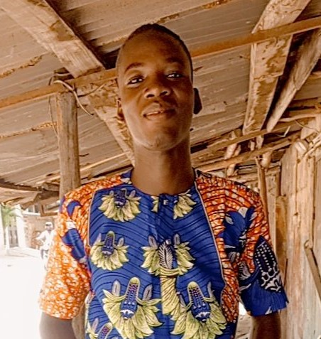

NOM : TOBOSSI
PRENOM : Gbetoho Sèdjro Martinien
NÉE le : 02 juillet 2003 à Cotonou
E-MAIL :gbetohesedjro@gmail.com
TEL : 00229 60084080

PRENOM : Gbetoho Sèdjro Martinien
NÉE le : 02 juillet 2003 à Cotonou
E-MAIL :gbetohesedjro@gmail.com
TEL : 00229 60084080
Pacours Académique
2023 :Baccalauréat série F3 à CPET Saint Nelchael
2023 :Diplôme du Technicien (DT) série EL à Saint Nelchael
2022 : Certificat d’Amplitude Professionnelle (CAP) à CPET Saint Nelchaël
2020 : Brevet d’ETUDE du Premier Cycle (BEPC) à CEG DJEFFA
2016 : Certificat d’Etude Primaire (CEP) à Saint Joseph de Copertino
2023 :Diplôme du Technicien (DT) série EL à Saint Nelchael
2022 : Certificat d’Amplitude Professionnelle (CAP) à CPET Saint Nelchaël
2020 : Brevet d’ETUDE du Premier Cycle (BEPC) à CEG DJEFFA
2016 : Certificat d’Etude Primaire (CEP) à Saint Joseph de Copertino
Capacité Linguistique et Atouts
Maitrise du Français à l’écrit et à l’oral
Maitrise partielle du fon et du goun
Maitrise partielle des logiciel word ; PowerPoint ; Excel
Maitrise partielle de l’anglais
Maitrise de certaine installation électrique
Maitrise partielle du fon et du goun
Maitrise partielle des logiciel word ; PowerPoint ; Excel
Maitrise partielle de l’anglais
Maitrise de certaine installation électrique
Loisir
Webtoon
Mangas
Lecture
Mangas
Lecture
Je certifie sincères et exacts les renseignements ci-dessus mentionnés.
Fait à Cotonou le, 08/04/2024